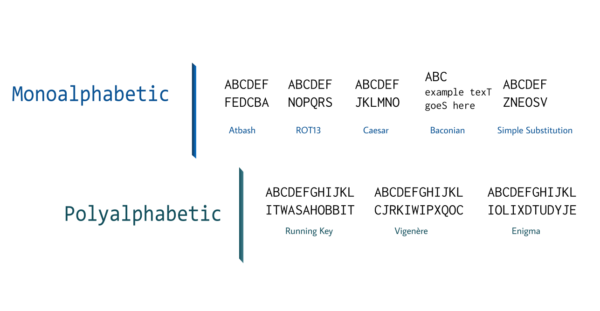

A key part of understanding cryptography is to delve a little deeper into the mathematical side of things -- this includes a vital tool, ciphers!
There are two forms of ciphers: classical and modern. Most classical ciphers are simple and easy to decode, while modern techniques are more advanced and often brute forcing is infeasible (but possible).
Classical Ciphers
These ciphers are relatively simple, and they are divided into two categories: substitution and transposition ciphers. 
--> Atbash
This simple cipher simply replaces the first letter of the alphabet with the last, the second with the second-to-last, and so on. (A becomes Z, B becomes Y, etc.) For all of these ciphers, you can use the Cipher Machine to experiment with them!
CAREFUL!
Classical ciphers are not very secure and are easy to crack with today's technology. They are rather simple and were made considering that human brute forcing would be unreasonable... but of course, computers exist today.
If you're looking for a practical, secure encryption method, take a look at the modern ciphers section of this page!
--> ROT13
This cipher is rather simple and easy. It simply replaces a letter with the letter 13 places after it in the standard alphabet, which can still make a message obscured but easy to decipher.
Why specifically 13 spaces? This is because the basic Latin alphabet has 26 letters (2 x 13).
--> Caesar
This cipher is famous and well-known, for one reason: it is simple and easy to understand. Of course, it provides no practical security nowadays whatsoever, but is an interesting novelty / introduction to ciphers. This develops further on ROT13, instead allowing for shifting by any number of spaces.
--> Baconian
The Baconian cipher is fittingly named after its inventor, Sir Francis Bacon. Every letter is replaced by a sequence of 5 characters algorithmically, which you can see below:
| A | B | C | D | E | F | G | H | I |
| J | K | L | M | N | O | P | Q | R |
| S | T | U | V | W | X | Y | Z |
How does this work? Well, we use these character sequences to strategically capitalize and uncapitalize letters (a = lowercase, b = uppercase), encoding the message into filler text:
hello -> AABBB AABAA ABABB ABABB ABBBA -> in A HOle In thE gROuNd THeRE Lived a hobbit
--> Simple Substitution
This cipher substitutes every plaintext letter with a different ciphertext letter, based on a "cipher alphabet":
Plain alphabet: abcdefghijklmnopqrstuvwxyz
Cipher alphabet: phqgiumeaylnofdxjkrcvstzwb
Rather simple, no? The following section will brief you on polyalphabetic ciphers, a slightly more complex variation on the previously mentioned ciphers.
--> Running Key
The running key cipher, much like other polyalphabetic ciphers, relies on a key and a tableau to encrypt and decrypt messages.
Did you know?
The tableau, or tabula recta, is a square chart of alphabets with each row being the previous row shifted one to the left. This creates a chart where any combination of two letters produces a specific letter.
This is used alongside a key for most polyalphabetic ciphers. Really interesting stuff!
For this cipher, the key is a long piece of text -- often an excerpt from a book. By formatting the key text in camel case (remove all whitespaces), we can match each letter of our message to a letter from the key and use the tableau to generate an encrypted message.
--> Vigenère
This cipher is famous for being considered "le chiffre ind hiffrable" (French for "unbreakable cipher") for nearly 300 years, and is commonly used today (not in practical settings of course).
The Vigenère uses a key and tableau just like with the running key cipher, except the key is a key word rather than a full excerpt (this makes running key more 'secure' than Vigenère usually).
Repeat the same process as with running key, where the key word is repeated over and over and matched to the message's letters to generate the encrypted message.
--> Enigma
Did you know?
The Enigma cipher machine is famous for its use in Germany during WWII, but was conceived prior to the war. It was considered so secure that it was used for some of the most confidential messages from the highest ranks, and its extensive features proved to be a real cryptographic challenge for avid decryptors.
This cipher was very much an enigma, being far more flexible (and thus harder to decrypt) than all the previous examples.
The Enigma uses a rotor mechanism that generated a cipher alphabet and was capable of both encryption and decryption -- the flexibility of it all stems from its adjustable machine settings, commonly based on a predetermined key lists that both the transmitter and receiver would use to properly encode/decode the message.
First, there are some important considerations to note about the Enigma:
Every time a key is pressed, the entire cipher alphabet changes (so pressing the same key repeatedly won't produce the same outputs)
The three changeable components of the Enigma are the rotors, the ringstellung (ring settings), and steckerverbindungen (plug board settings).
This particular explanation focuses on the Enigma I (Wehrmacht Enigma) -- yes, there are other variants too! (check the resources page to learn more)
The Enigma, at its simplest, essentially takes an input and passes through three rotors (which contain different substitution cipher alphabets), then runs through a reflector which passes the input back through the rotors backwards. To add to its complexity, the input passes through an interchangeable plugboard (which functions as a )
How does the Enigma encrypt the same input differently every time a key is pressed? The answer is the three rotors -- every time a key is pressed, rotor I moves forward one position; when it has turned through all 26 letters encryption is based on rotor II, which repeats the process. This alone allows for 17,000 different combinations before the encryption process repeats!